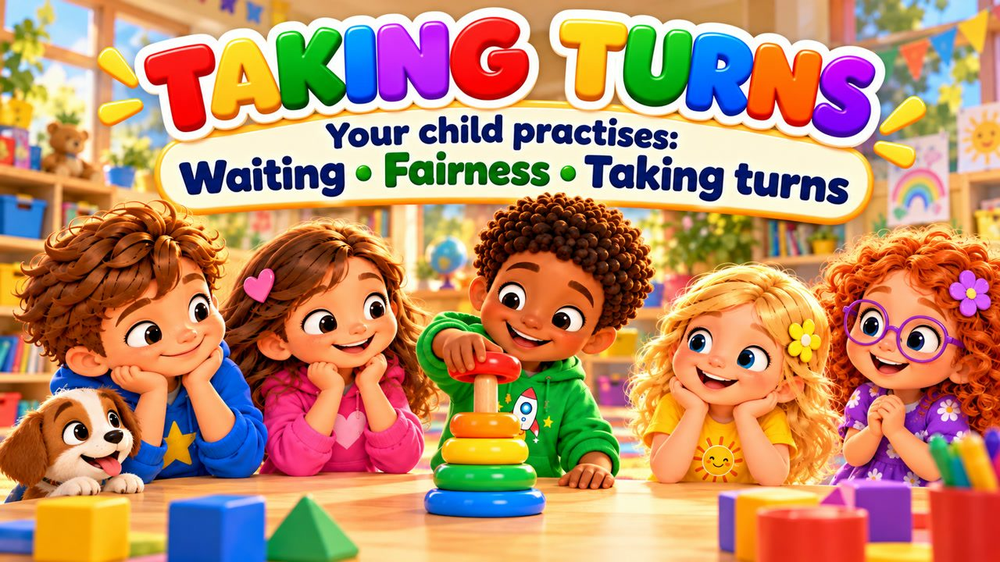
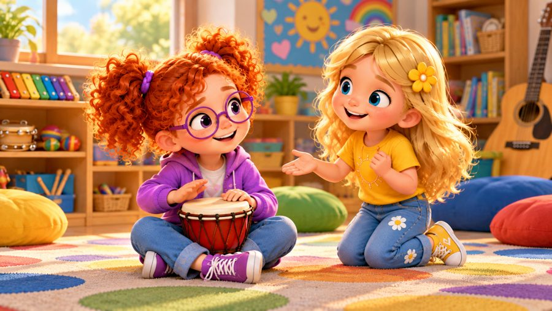

Your Turn, My Turn
A song about taking turns, waiting calmly and finding fair ways to choose, for children and their grown-ups.
Free activities, colouring pages, quiz and participation certificate will be available with the video release.

▶💡 Why this skill matters: taking turns & patience
Taking turns teaches patience, fairness and self-control — skills children use in every game, conversation and classroom. Waiting is hard for young children, so it helps to make it visible and short at first. Play simple turn-taking games at home and say it out loud: “Your turn, then my turn.”
👨👩👧 What your child learns
- Wait, watch and cheer
- Ask kindly for a turn
- Let each friend choose
💬 Talk about it after the song
- What can you do while you wait?
- What can you say to ask for a turn?
- How can both friends choose a game?
🏅 Quiz & Certificate
Watched the song together? Now read each question aloud — your child points to the right picture. Answer all 6 questions and your child earns a printable certificate!
🔒 The name is only used to draw the certificate on your device. We don't save or send anything.
You did it! 🎉
All 6 answers are right! Type your child's name to make the certificate.
🖨️ Free printables
Free for home and classroom use. Print on A4 or Letter paper.
🖼️ Scenes from the song





🎵 More songs


🎤 Lyrics – Your Turn, My Turn
[Chorus Hook - Start]
Your turn!
My turn!
We can both have fun!
You go first,
then here I come!
Wait a little,
share the play...
Everybody gets a turn today!
[Intro]
Your turn...
My turn...
Sometimes I go first.
Sometimes you do.
And that's okay!
[Verse 1]
Max ran over to the slide,
But Jay was waiting there beside.
"I want to go!"
Max almost said...
Then stopped
and looked ahead.
Jay climbed up,
then slid down fast.
"Wheee!"
Max smiled as Jay went past.
Then Jay called:
"Now it's you!"
Max climbed up
and shouted:
"WOO-HOO!"
[Pre-Chorus]
I can wait.
I know my turn will come.
While I wait,
I can still have fun.
You go first,
then I go too...
There's enough turns
for me and you!
[Chorus]
Your turn!
My turn!
We can both have fun!
You go first,
then here I come!
Wait a little,
share the play...
Everybody gets a turn today!
Your turn!
My turn!
Round we go!
I can wait
because I know...
When your turn
is finally done...
Soon it will be
MY TURN!
[Verse 2]
Rosie had a little drum,
Tap-tap-tapping,
having fun.
Lily came and asked:
"Can I play?"
Rosie said:
"Yes!
After my turn, okay?"
Tap-tap-tap,
then Rosie stopped.
"Now it's yours!"
The drum was passed.
Lily played
a funny beat...
And everyone clapped
to the rhythm with their feet!
[Pre-Chorus]
I can wait.
I know my turn will come.
While I wait,
I can still have fun.
You go first,
then I go too...
There's enough turns
for me and you!
[Chorus]
Your turn!
My turn!
We can both have fun!
You go first,
then here I come!
Wait a little,
share the play...
Everybody gets a turn today!
Your turn!
My turn!
Round we go!
I can wait
because I know...
When your turn
is finally done...
Soon it will be
MY TURN!
[Verse 3]
Mia and Jay had one small game.
Both wanted
to choose the same.
"I want to start!"
"So do I!"
For just a moment,
both asked why.
Mia said:
"Let's take turns to choose.
You pick first,
then I will choose."
Jay picked a puzzle,
Mia picked a race...
Two different choices,
both had a place!
[Bridge - Call and Response]
Someone's using it?
I CAN WAIT!
Whose turn now?
YOUR TURN!
And after that?
MY TURN!
Do I need to grab?
NO!
Do I need to shout?
NO!
Can I ask when my turn comes?
YES!
Can we both have fun?
YES, WE CAN!
What do we do?
TAKE TURNS!
[Break]
Waiting for a turn
doesn't mean
I'm missing out.
I can watch.
I can cheer.
I can choose
what I'll do next.
And when your turn is over...
mine is getting closer!
[Final Chorus]
Your turn!
My turn!
We can both have fun!
You go first,
then here I come!
Slide or drum,
game or toy...
Taking turns
means everyone enjoys!
Wait!
Watch!
Cheer!
Then go!
I can take turns
because I know...
Sometimes you,
sometimes me...
That's how fair
our play can be!
Your turn!
My turn!
Round and round...
Everybody gets a turn
when we share the fun around!
[Outro]
Your turn...
My turn...
You go...
Then I go...
And we both
get to have fun!
Creative production is AI-assisted.